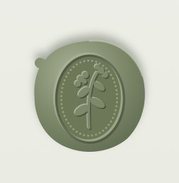
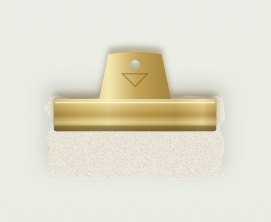
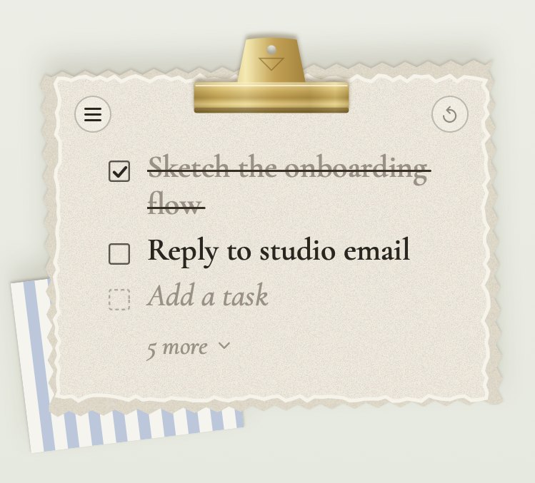
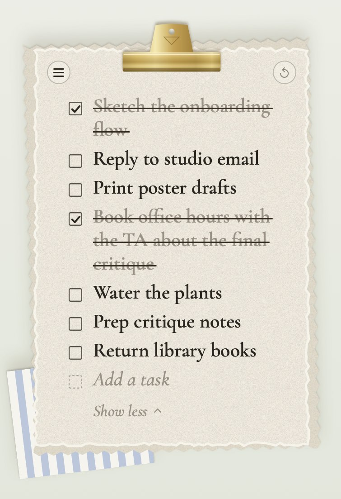
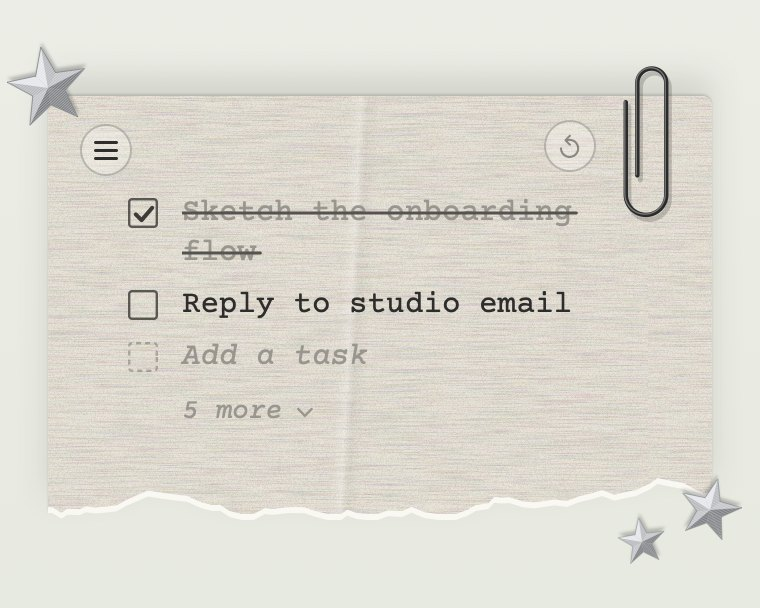
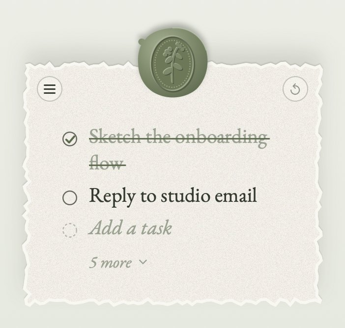

Out of the way
It folds down to one seal. Click it when you need your list.
A to-do note that hangs on your desktop like a page from a scrapbook.
If macOS says it can’t check the app: System Settings, Privacy & Security, Open Anyway.
unzip ~/Downloads/"Sticky Note - Claude Code skill.zip" -d ~/.claude/skills/
Claude builds it on your Mac, so there’s no security prompt.




It folds down to one seal. Click it when you need your list.

Your next two tasks and how many wait. Paste a list to add them all.

Brass clip, wax seal or torn paper with stitched stars. Switch from the ☰ button.